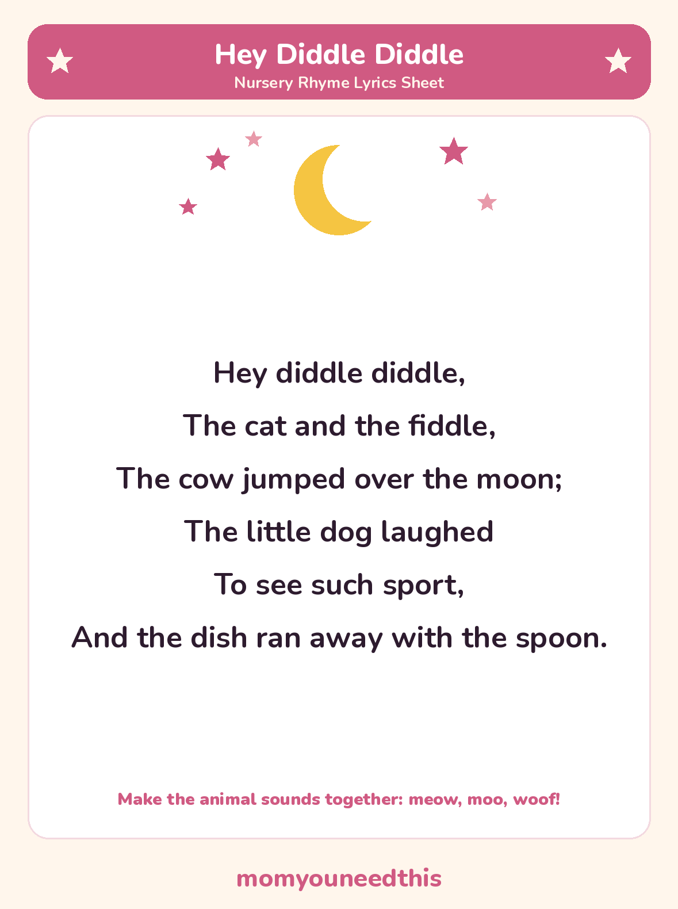

Hey Diddle Diddle The classic nonsense rhyme, with lyrics and a free printable
Nonsense rhymes work because the pictures are impossible — that is the joke, and toddlers get it instantly. Read it with big surprise in your voice, and let your child be the one who laughs first at the great escape at the end.
Last updated: October 25, 2026
Quick Answer
Hey Diddle Diddle is a traditional nonsense nursery rhyme: the cat and the fiddle, the cow jumping over the moon, the little dog laughing, and the dish running away with the spoon. The full lyrics are on this page and on a free printable lyrics sheet. It is one short verse, made to be said out loud.
At a Glance
- Rhyme: Hey Diddle Diddle
- Type: Nonsense story rhyme
- Best for: Ages 2–5
- Printable: 1 lyrics sheet
- Tradition: In print since the 1700s
- Cost: Free — print at home
🎵 Hey Diddle Diddle Lyrics
One verse, six lines, and not a sensible thing in it — that is the design. Read it out loud and let the pictures land one at a time.
Hey diddle diddle,
The cat and the fiddle,
The cow jumped over the moon;
The little dog laughed
To see such sport,
And the dish ran away with the spoon.

✂️ Download Your Free Hey Diddle Diddle Lyrics Sheet
The full lyrics on one sheet — big, clear lines for young readers.
⬇️ Download Free Lyrics Sheet 🖨️ Print🎁 Free printable for ages 2–5
🌙 About This Rhyme
Hey Diddle Diddle has no actions and no lesson — it is a nonsense rhyme, and its play is sound and pictures. A cat plays an instrument, a cow clears the moon in one jump, a dog laughs at the show, and the dish elopes with the spoon. Children who know perfectly well that cows cannot jump over the moon enjoy it precisely because it breaks the rules so completely.
That makes it a natural animal-sounds game: pause at each animal and let your child supply the meow, the moo and the little dog's laugh before you read on. Nobody knows who wrote it — it has been printed in Mother Goose collections since the 1700s, passed along because it is fun to say.
🖨️ How to Use This Rhyme
- Read it with voices. A different voice for the cat, the cow and the little dog makes the nonsense twice as funny.
- Pause for the sounds. Stop at each animal and let your child make its sound before you read the next line.
- Print the lyrics sheet. Six short lines in big print — point at each line as you say it together.
- Let your child “read” it back. From memory, from the pictures in their head, from the sheet — all of it counts as early reading.
🎵 More Nursery Rhymes & Fun
🎵 Nursery Rhymes
The full hub of classic nursery rhymes — lyrics and a free printable sheet for every rhyme. Browse all nursery rhymes.
🐭 Three Blind Mice
A tiny story rhyme about three mice and a farmer's wife, with lyrics and a printable sheet. Sing Three Blind Mice.
🚣 Row Row Row Your Boat
The rowing rhyme you can also sing as a round, with lyrics and a printable sheet. Sing Row Row Row Your Boat.
🎨 Free Coloring Pages
Hundreds of free coloring sheets to print for every age. See the coloring pages.
❓ Hey Diddle Diddle FAQ
What are the lyrics to Hey Diddle Diddle?
The full words are in the lyrics section near the top of this page. The whole rhyme is a single six-line verse, and the free printable sheet carries the same words for singing from paper.
What age is Hey Diddle Diddle for?
It suits ages 2 to 5. Toddlers enjoy the rhythm and the animal sounds; preschoolers get the joke — that everything in it is gloriously impossible — and start reciting it themselves.
Can I print the lyrics sheet?
Yes — the lyrics sheet is free to print at home, with no signup. Print it as many times as you like for your own family or classroom.
What does “hey diddle diddle” mean?
Nothing at all — and that is the point. It is a nonsense refrain, chosen for its sound and bounce rather than its meaning, like a little drumbeat that starts the rhyme. The verse that follows is nonsense too, and none the worse for it.